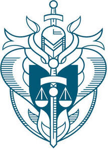

Trade Mark Journal No.2025/030 25 July 2025
UK00004233248 14 July 2025 (9,16,35,36,41,42,45)

- Class 9
- Computers; computer software relating to loss adjusters and loss adjusting; computer databases; recorded media; sound and video recordings; CDs; pre-recorded CDs; pre-recorded CD ROMs; data processing apparatus and instruments; multimedia software recorded on CD-ROM; electronic publications; downloadable publications.
- Class 16
- Educational books; printed matter; printed publications; stationery; periodicals; journals; magazines; guides; newsletters; workbooks; instructional and teaching materials; handbooks; books; textbooks; education and training course materials; guides; manuals; printed business reports; printed guidelines.
- Class 35
- Business services; Advertising and advertisement services; marketing; promotional marketing; providing marketing information via websites; compilation of commercial registers; administering of professional [vocational] certifications; organisation of social networking events; business networking; Information services relating to jobs and career opportunities; career advisory services (other than education and training advice); career networking services; human resources management and recruitment services; information, advisory and consultancy services in relation to all of the aforesaid services.
- Class 36
- Loss adjustment; Insurance; administration of insurance claims; administration of insurance claims adjustment; advice relating to insurance; claim adjustment for non-life insurance; claim assessments (Insurance -); claims adjustment for non-life insurance; claims adjustment in the field of insurance; claims adjustment (Insurance -); financial affairs; monetary affairs; loss adjusting services in the field of insurance; loss adjustment; loss adjustment in the field of insurance; loss assessments; real estate affairs; information, advisory and consultancy services in relation to all of the aforesaid services.
- Class 41
- Education services; arranging, conducting and organisation of classes, workshops, training courses, workshops, lectures, seminars, conferences and exhibitions; library services; online education services; accreditation of educational services; accreditation of professional competency; providing training and educational examination for certification purposes; publication of text books; providing online electronic publications; training and education services; certification of education and training awards; certification of educational and training standards; business mentoring services; career counselling and coaching; information, advisory and consultancy services in relation to all of the aforesaid services.
- Class 42
- Services of a professional institute for and on behalf of its members relating to loss adjusting and professional standards thereof; research and study services relating to loss adjustment; quality assurance services; certification services; certifying individual attainment, materials, and services meeting prescribed standards; testing, analysis and evaluation of the services of others for the purpose of certification; information, advisory and consultancy services in relation to all of the aforesaid services.
- Class 45
- Professional representational and lobbying services in the field of loss adjustment; online social networking services.
The Chartered Institute of Loss Adjusters
Representative: Gill Jennings & Every LLP